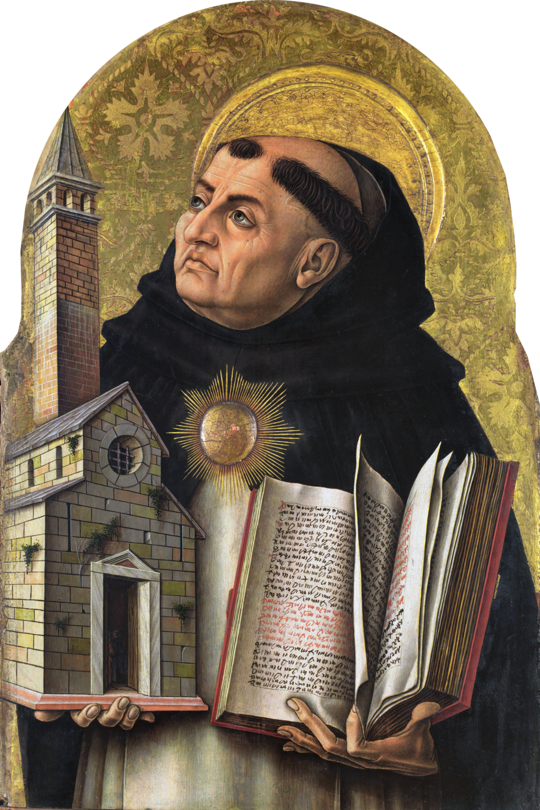
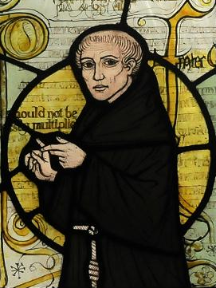

Tema 6 · La filosofía medieval: Dios, fe y razón
Para entrar en la filosofía medieval
La introducción de la Parte II ha puesto el marco: durante mil años la filosofía europea piensa dentro del cristianismo, una religión que afirma un Dios único y creador, la salvación del ser humano y una verdad revelada que se acepta por fe (Parte II). Este tema entra en lo que la filosofía hizo dentro de ese marco. Y lo que hizo, una y otra vez, fue medirse con una sola pregunta de fondo: si Dios ya ha revelado la verdad, ¿qué le queda por hacer a la razón? La fe y la razón, lo que se cree y lo que se demuestra, ¿son aliadas, extrañas o rivales?
Una pregunta, tres respuestas. Hemos organizado el tema en torno a esa pregunta, porque es la que da unidad a toda la época y la que mejor se estudia por contraste. Tras una sección de andamiaje, que explica cómo se dividió y cómo trabajó la filosofía medieval (§25), el corazón del tema son tres grandes pensadores que respondieron de tres maneras distintas. Agustín de Hipona, en los albores del período, funde fe y razón en un mismo movimiento: hay que creer para entender (§26). Tomás de Aquino, en la cumbre de la Edad Media, las distingue con cuidado para mostrar que se armonizan, y demuestra por pura razón la existencia de Dios con sus famosas cinco vías (§27). Guillermo de Ockham, al final, las separa: la razón no puede probar casi nada de Dios, que queda enteramente para la fe (§28). Creer para entender, armonizar, separar: tres posiciones que conviene leer seguidas, porque cada una se entiende mejor frente a las otras, y porque entre las tres dibujan el arco completo del problema, desde la unión más estrecha hasta el divorcio que abrirá la puerta a la modernidad.
Una cuarta figura. Cerraremos el tema saliendo del aula. Junto a los grandes maestros de la teología, la Edad Media tuvo figuras que no encajan en el molde del filósofo de escuela y que merecen, sin embargo, un lugar. Hildegard von Bingen —abadesa, visionaria, naturalista, compositora— es una de ellas, y con ella, tercera de la serie que abrieron Aspasia (§08) e Hipatia (§24), recordamos que el pensamiento de una época nunca cabe entero en sus autores canónicos (§29).
§25 · La filosofía medieval: etapas, métodos y cuestiones
Antes de entrar en los autores conviene un poco de andamiaje: saber en qué grandes etapas se divide la filosofía de estos mil años, cómo se trabajaba y se enseñaba en ella, cuál fue su problema central y de qué herencia griega se sirvió para pensarlo. Esta sección monta ese armazón; las siguientes lo llenan con tres pensadores concretos.
Dos grandes etapas: patrística y escolástica. La filosofía cristiana medieval suele dividirse en dos grandes momentos, separados por varios siglos de transición. El primero es la patrística (de pater, padre), la obra de los llamados Padres de la Iglesia, los primeros pensadores cristianos que, entre los siglos II y VIII, definieron la doctrina y la defendieron frente a otras interpretaciones. Su tarea no era tanto investigar cuanto construir: dotar a la nueva fe de una formulación intelectual sólida, capaz de competir con la cultura pagana de su tiempo. Para ello echaron mano de la filosofía griega que tenían a mano, sobre todo del platonismo. La cumbre de la patrística, y con mucho su filósofo más hondo, es Agustín de Hipona (§26).
El segundo momento es la escolástica (de schola, escuela), la filosofía que se cultiva en las escuelas medievales —las monásticas, luego las catedralicias y, desde el siglo XIII, las universidades— entre los siglos XI y XV. Si la patrística fundaba, la escolástica sistematiza: hereda un cuerpo de doctrina ya establecido y se dedica a ordenarlo, a precisarlo y a defenderlo con un rigor técnico cada vez mayor. Es una filosofía de profesores y de aulas, escrita en latín para un público especializado, que discute sin descanso problemas heredados. Sus dos figuras mayores, y los otros dos protagonistas de este tema, son Tomás de Aquino (§27) y Guillermo de Ockham (§28), ya en la fase final, cuando el gran edificio escolástico empieza a agrietarse.
Cómo se trabajaba: lectio, quaestio, disputatio. La escolástica no es solo un período: es también un método, una manera de enseñar y de pensar que conviene conocer, porque explica la forma misma de los textos que leeremos. La enseñanza giraba en torno a tres ejercicios encadenados. El primero era la lectio, la lectura comentada de un texto autorizado —la Biblia, una obra de Aristóteles, una colección de sentencias de los Padres—: el maestro lo leía y lo explicaba línea a línea. De esa lectura surgía, de forma natural, el segundo ejercicio: la quaestio, la cuestión, el problema que el texto plantea y que merece discutirse aparte. Y la cuestión se resolvía mediante el tercero y más vivo: la disputatio, la disputa, un debate reglado en el que se exponían primero los argumentos a favor y en contra de una tesis y el maestro la zanjaba al final con su propia resolución, respondiendo una por una a las objeciones.
Esa estructura —plantear la cuestión, alinear los argumentos contrarios, resolver, refutar las objeciones— es la que da forma a las grandes obras de la época, las sumas, esos enormes compendios que pretenden abarcar ordenadamente todo el saber. La Suma teológica de Tomás de Aquino, de la que saldrán las cinco vías (§27), está escrita entera así: como una sucesión de cuestiones disputadas. Conviene tenerlo presente para no descontextualizar lo que leamos: aquellos textos no son ensayos ni tratados continuos, sino piezas de un debate de escuela.
La gran cuestión: fe y razón. ¿De qué se discutía en aquellas aulas? De muchas cosas, pero una atraviesa todas las demás y vertebra este tema: la relación entre la fe y la razón. El problema, ya lo vimos, nace del propio cristianismo (Parte II). Si la verdad última ha sido revelada por Dios y se acepta por fe, ¿qué papel le queda a la razón, esa herramienta que los griegos habían afilado durante siglos? Las respuestas posibles forman un abanico que va de un extremo a otro. En un extremo está el fideísmo, que desconfía de la razón y lo fía todo a la fe, hasta el punto de que un autor temprano, Tertuliano, pudo preguntarse qué tiene que ver Atenas con Jerusalén, la filosofía con el evangelio. En el otro extremo asomaría la tentación contraria: hacer de la razón un tribunal autónomo, capaz incluso de contradecir a la fe, como se acusó de sostener a algunos lectores radicales de Aristóteles con su doctrina de la «doble verdad». Entre ambos extremos caben muchas posiciones intermedias, y son las que de verdad cuentan.
Las tres secciones siguientes recorren tres de esas posiciones, y no por azar, sino porque entre las tres trazan el recorrido completo. Agustín une fe y razón hasta casi fundirlas: se cree para entender (§26). Tomás las distingue para armonizarlas, dando a cada una su terreno y mostrando que no pueden contradecirse, pues la verdad es una sola (§27). Ockham las separa, retira a la razón casi todo lo que tocaba a Dios y lo devuelve a la fe (§28). No conviene adelantar más: basta retener que la misma pregunta admite respuestas muy distintas, y que el modo de responderla cambia con los siglos.
La herencia griega: dos recepciones. Para pensar su fe, los medievales no partieron de cero: se apoyaron en la filosofía griega que iban heredando. Pero no la heredaron toda a la vez, y eso marcó la diferencia entre las dos etapas. La filosofía medieval se sirve de dos grandes recepciones sucesivas de la Antigüedad.
La primera es la del platonismo, y más exactamente la de su versión tardía, el neoplatonismo de Plotino. Estuvo disponible desde temprano y resultó muy afín al cristianismo, hasta el punto de parecer hecha a su medida. No es difícil ver por qué: la división platónica entre un mundo sensible y cambiante y un mundo inteligible, eterno y superior (§09), encajaba con la distinción cristiana entre la criatura y Dios; la idea de un alma inmaterial e inmortal, superior al cuerpo (§11), confirmaba la antropología cristiana; y el Bien supremo de Platón se dejaba leer como anticipo del Dios creador. Esta es la herencia con la que trabaja la patrística, y la que Agustín cristianiza con genio (§26).
La segunda recepción, mucho más tardía y mucho más conflictiva, es la de Aristóteles. Buena parte de su obra se había perdido para el Occidente latino y solo se recuperó entre los siglos XII y XIII, a través de las traducciones del griego y, sobre todo, del árabe: fueron los filósofos del mundo islámico, como Avicena y Averroes, quienes habían conservado y comentado a Aristóteles, y por su mediación —y por la de centros de traducción como el de Toledo— regresó a Europa (Parte II). Su llegada fue una conmoción. Aristóteles ofrecía un sistema completo y poderoso para explicar la naturaleza, pero contenía tesis difíciles de conciliar con la fe, como la eternidad del mundo, que choca con la creación, o sus dudas sobre la inmortalidad personal del alma. La Iglesia llegó a prohibir su enseñanza, y el siglo XIII vivió de su digestión. La gran empresa de Tomás de Aquino será precisamente esa: mostrar que el aristotelismo, bien entendido, no solo no amenaza la fe, sino que puede ponerse a su servicio (§27). Con ello, la metafísica de la forma, del acto y la potencia y del primer motor que estudiamos en Aristóteles (§14) pasa a ser la cantera de la teología cristiana.
Con el armazón ya montado —dos etapas, un método, una cuestión central y dos herencias griegas—, podemos entrar en las tres voces que dieron a esa cuestión sus tres grandes respuestas. Empezamos por la primera en el tiempo: Agustín.
§26 · Agustín de Hipona: creer para entender y la existencia de Dios
Agustín de Hipona (354-430 e. c.) es el pensador que pone en pie la filosofía cristiana. En el tránsito del mundo antiguo al medieval —vivió el saqueo de Roma y murió con los vándalos a las puertas de su ciudad—, este obispo del norte de África funde la herencia de Platón con la fe cristiana en una síntesis tan poderosa que dominará el pensamiento de Occidente durante casi mil años, hasta la llegada de Tomás. Toda su obra nace de una experiencia personal, la de una larga búsqueda de la verdad que solo se aquieta en la conversión, narrada en sus Confesiones; y toda ella gira en torno a dos polos: Dios y el alma1.

Creer para entender. La posición de Agustín ante el problema de la fe y la razón no es fideísta: no renuncia a la razón en favor de la fe. Pero tampoco las pone una junto a otra como dos caminos independientes. Las entrelaza en un mismo movimiento, condensado en una fórmula célebre: credo ut intellegam, intellegam ut credam, «creo para entender, entiendo para creer». La fe y la razón no se contradicen ni se ignoran: se necesitan y se refuerzan. La fe es el punto de partida, la que orienta la búsqueda y ofrece lo que la razón aún no ve; pero el creyente no se queda en la fe, sino que usa la razón para profundizar en lo que cree y comprenderlo mejor. No hay que elegir entre creer y entender: se cree para poder entender, y lo entendido afianza la fe. La razón, lejos de ser enemiga de la religión, es su mejor aliada.
Contra el escepticismo: si me engaño, existo. Esa confianza en la razón obliga a Agustín a un primer combate: contra el escepticismo, la doctrina que niega que podamos alcanzar ninguna verdad cierta (§23). Si nada pudiera saberse con seguridad, la propia búsqueda de la verdad sería vana. Agustín responde con un argumento de una agudeza que lo hará famoso. El escéptico duda de todo; pero, aunque dude de todo, no puede dudar de que está dudando, y por tanto de que existe él, que duda. Es más: aunque se engañe, aunque todas sus opiniones sean falsas, para engañarse tiene que existir. Si fallor, sum: «si me engaño, existo». El error mismo demuestra la existencia del que yerra. Hay, pues, al menos una verdad que ninguna duda puede tocar: la de mi propia existencia como sujeto consciente. Con ella se derrumba el escepticismo y se asegura un punto firme desde el que partir2.
La verdad está dentro, y por encima de ti. ¿Dónde se busca, entonces, la verdad? No fuera, en el mundo de los sentidos, sino dentro. «No salgas fuera, entra en ti mismo: en el interior del hombre habita la verdad», escribe Agustín. Es el giro hacia la interioridad, una de sus grandes aportaciones. Pero ese movimiento hacia dentro no termina en uno mismo. Cuando el alma examina las verdades que encuentra en su interior —las de las matemáticas, por ejemplo, o las del bien y la belleza—, descubre que son inmutables, eternas y necesarias: que siete y tres son diez lo es siempre, para todos, y no depende de que yo lo piense. Y entonces topa con una paradoja decisiva: el alma humana es mudable, cambia y se equivoca; pero esas verdades que ella reconoce no cambian ni se equivocan. Algo inmutable es, por fuerza, superior a lo mudable. Luego esas verdades están por encima del alma: no las ha creado ella, las encuentra, como quien halla una perla que ya estaba ahí.
La existencia de Dios. Aquí está la prueba agustiniana de la existencia de Dios, y nótese cómo nace: no de mirar el mundo exterior, como hará Tomás, sino de mirar dentro del alma. Si hay verdades eternas e inmutables, superiores a nuestra mente mudable, tiene que existir un fundamento eterno e inmutable que las sostenga, una Verdad suprema de la que todas las verdades particulares dependen. Y esa Verdad eterna, absoluta, fuente de todas las demás, no puede ser otra cosa que Dios. Dios y la Verdad se identifican: demostrar que hay verdad es demostrar que hay Dios. La existencia de Dios no se prueba, pues, por sus efectos en la naturaleza, sino por las huellas de lo eterno que el alma encuentra en su propio interior3.
La iluminación. Queda una pregunta: si esas verdades eternas están por encima de nuestra mente, ¿cómo logra una mente finita y mudable acceder a ellas? La respuesta de Agustín es la teoría de la iluminación, y es su manera de cristianizar la herencia de Platón. Para Platón, conocer las Formas era recordar lo que el alma había visto antes de nacer (§10); pero el cristianismo niega que el alma preexista al cuerpo, así que la reminiscencia no sirve. Agustín la sustituye por la iluminación: así como el ojo no ve los colores sin la luz del sol, la mente no capta las verdades eternas sin una luz espiritual que se las haga inteligibles, y esa luz es Dios mismo. Las verdades que conocemos son ideas ejemplares, los modelos eternos de todas las cosas, que ya no están —como en Platón— en un cielo aparte, sino en la mente de Dios, como sus pensamientos creadores. Dios, que nos creó, nos ilumina para que podamos conocer. Conocer la verdad es, en el fondo, una forma de encontrarse con Dios. Así, en Agustín, teoría del conocimiento y religión son una sola cosa: el camino hacia el saber y el camino hacia Dios coinciden, y ambos pasan por el interior del alma. Es el modelo que dominará hasta que, ocho siglos después, otro pensador proponga empezar no por dentro, sino por los sentidos y el mundo: Tomás de Aquino.
§27 · Tomás de Aquino: la armonía de fe y razón y las cinco vías
Tomás de Aquino (1224-1274 e. c.) representa la cumbre de la escolástica y la mayor síntesis intelectual de la Edad Media. Fraile dominico y profesor en la Universidad de París, en pleno siglo XIII, le tocó vivir el momento decisivo en que Aristóteles regresaba a Occidente y amenazaba con dividir a creyentes y filósofos (§25). Su obra inmensa —encabezada por la Suma teológica— se entiende toda como respuesta a ese desafío: mostrar que la mejor filosofía, la de Aristóteles, y la fe cristiana, lejos de enfrentarse, se necesitan. Donde Agustín había pensado con Platón, Tomás piensa con Aristóteles, y ese cambio de maestro lo cambia casi todo4.

La armonía de fe y razón. La posición de Tomás ante el problema central del tema es la de la armonía, y es más fina que la de Agustín. No las funde: las distingue cuidadosamente para luego mostrar que concuerdan. Razón y fe son dos vías de conocimiento distintas. La razón, la filosofía, parte de los datos de los sentidos y procede por demostración; la fe, la teología, parte de lo que Dios ha revelado y se acepta por la autoridad de quien lo revela. Tienen métodos distintos y, en buena parte, objetos distintos. Pero —y este es el punto— no pueden contradecirse, porque la verdad es una sola: Dios es a la vez el autor de la razón con que pensamos y de la revelación que creemos, y Dios no se contradice. Si un razonamiento parece chocar con la fe, es que el razonamiento está mal hecho.
Lo que la razón alcanza y lo que la supera. ¿Cómo se reparten, entonces, el terreno? Tomás distingue tres zonas. Hay verdades que pertenecen solo a la fe, porque superan la capacidad de la razón: que Dios sea uno y trino, o que el mundo haya sido creado en el tiempo, no pueden demostrarse, solo creerse. Hay verdades que pertenecen solo a la razón, las del conocimiento natural del mundo. Y hay una franja que ambas comparten: verdades sobre Dios a las que se puede llegar también razonando, como su existencia. A esas verdades accesibles por las dos vías Tomás las llama preámbulos de la fe (praeambula fidei): son el prólogo racional de la religión, el tramo del camino que la razón puede recorrer por su cuenta antes de que la fe tome el relevo. La filosofía no agota lo cognoscible, pero tampoco es una sierva muda: tiene su propia autonomía y su propia dignidad. La fe la corona, no la suprime.
Demostrar a Dios desde el mundo. La existencia de Dios es, justamente, el más importante de esos preámbulos: una verdad que se cree, pero que también se puede demostrar. Y aquí se ve el giro respecto de Agustín. Tomás no prueba a Dios mirando hacia dentro, por las verdades eternas del alma, sino mirando hacia fuera, partiendo de los datos que los sentidos nos ofrecen del mundo. Su prueba es a posteriori: asciende desde los efectos que observamos hasta su causa. Cada una de sus famosas cinco vías arranca de un hecho de experiencia, sigue el hilo de las causas hacia atrás y concluye que esa cadena no puede prolongarse hasta el infinito, sino que exige un primer término, que es Dios. Todas comparten ese esqueleto; la metafísica que las sostiene —el acto y la potencia, las cuatro causas, el primer motor— es la de Aristóteles que ya estudiamos (§14), ahora puesta al servicio de la teología.
Las cinco vías son estas:
La vía del movimiento. Vemos que en el mundo hay cosas que se mueven, esto es, que cambian. Pero todo lo que se mueve es movido por otro, pues mover algo es hacerlo pasar de la potencia al acto, y eso solo puede causarlo algo que ya esté en acto. Esa serie de motores no puede remontarse al infinito, porque entonces no habría un primer motor y, sin él, tampoco los demás moverían. Ha de existir, pues, un primer motor inmóvil, que mueve sin ser movido: «y todos entienden que este es Dios».
La vía de la causa eficiente. En el mundo todo efecto tiene una causa, y nada puede ser causa de sí mismo, pues tendría que ser anterior a sí mismo. Tampoco aquí cabe una cadena infinita de causas: sin una primera, no habría intermedias ni última. Ha de existir, por tanto, una causa eficiente primera, no causada por ninguna otra, «a la que todos llaman Dios».
La vía de la contingencia. Las cosas del mundo son contingentes: nacen y perecen, pueden existir o no existir. Pero si todo fuera contingente, hubo de haber un momento en que nada existía; y de la nada, nada surge, así que tampoco ahora existiría nada, lo cual es falso. Tiene que haber, pues, al menos un ser necesario, que no pueda no existir, fundamento de la existencia de todos los demás: y ese ser necesario es Dios.
La vía de los grados de perfección. Observamos en las cosas grados de bondad, de verdad, de nobleza: unas son más buenas o más verdaderas que otras. Pero hablar de «más» y «menos» supone una medida, un máximo con el que se comparan. Ha de existir, por tanto, algo que sea sumamente bueno, verdadero y perfecto, causa de toda la bondad y la perfección de lo demás: y a eso lo llamamos Dios.
La vía del orden del mundo (o de la finalidad). Vemos que los seres naturales, aun los que carecen de conocimiento, obran de manera ordenada, como dirigidos a un fin: actúan casi siempre del mejor modo para alcanzarlo. Pero lo que carece de inteligencia no puede tender a un fin si no es dirigido por alguien que la tenga, como la flecha es dirigida por el arquero. Existe, pues, un ser inteligente que ordena la naturaleza hacia sus fines: y ese ser es Dios.
El alcance de las vías. Conviene no pedirles a las cinco vías más de lo que dan. No describen al Dios cristiano en su plenitud —no prueban que sea trino, ni providente, ni que se haya encarnado—, sino que establecen, por pura razón, que existe un primer principio del que el mundo depende: motor, causa, ser necesario, perfección suma, inteligencia ordenadora. El resto pertenece a la fe. Pero ese tramo racional basta para el propósito de Tomás: mostrar que la razón, partiendo del mundo, puede llegar por sí sola hasta el umbral de Dios. La fe no contradice a la razón; la culmina. Es el equilibrio perfecto entre las dos, y durará poco: apenas dos generaciones después, otro fraile lo someterá a una crítica demoledora.
§28 · Guillermo de Ockham: nominalismo, navaja y separación de fe y razón
Guillermo de Ockham (h. 1287-1347 e. c.), fraile franciscano inglés, cierra la gran escolástica y, al cerrarla, abre una grieta por la que asomará la modernidad. Una sola generación después de Tomás, deshace su síntesis. Donde Tomás había armonizado fe y razón, Ockham las separa; donde la escolástica había poblado el mundo de entidades para explicarlo, él las recorta sin piedad. Pensador agudo y polemista incómodo —acabó enfrentado al papa y excomulgado—, su obra marca el fin de una época y el principio de otra5.

El problema de los universales. Para entender a Ockham hay que asomarse a una de las grandes discusiones de toda la Edad Media: el problema de los universales. Un universal es un término general, como «hombre» o «blancura», que se aplica a muchos individuos a la vez. La pregunta es: ¿a qué corresponde ese término en la realidad? ¿Existe algo así como la humanidad, una naturaleza común realmente presente en todos los hombres, o solo existen los hombres concretos, y «hombre» es apenas un nombre que les damos? La discusión venía de lejos: era, en el fondo, la vieja disputa entre Platón, que situaba lo universal en un mundo aparte (§09), y Aristóteles, que lo ponía dentro de las cosas (§14). Frente a quienes sostenían que los universales tienen algún tipo de existencia real —el realismo—, Ockham defiende la posición contraria, el nominalismo.
El nominalismo. Para Ockham, solo existen los individuos. No hay «humanidad» alguna flotando en las cosas ni en un cielo platónico: existen este hombre y aquel, cada uno singular y único, y nada más. ¿Qué son entonces los universales? Simples nombres (de ahí nominalismo), signos mentales con los que agrupamos cosas parecidas para poder pensarlas y hablar de ellas con economía. «Hombre» no nombra una entidad común, sino que es un concepto que vale por muchos individuos semejantes. Lo universal no está en la realidad, sino en la mente y en el lenguaje; en el mundo, todo es particular. Es una tesis de enormes consecuencias: si no hay naturalezas comunes que captar, el conocimiento cambia de signo, y la metafísica se queda sin buena parte de sus objetos.
La navaja de Ockham. Detrás del nominalismo late un principio de método que ha hecho a Ockham más famoso que cualquiera de sus doctrinas: el de no multiplicar los entes sin necesidad. «En vano se hace con más lo que puede hacerse con menos»: si una explicación más simple da cuenta de los hechos, sobra la más complicada. A este principio de economía se lo conoce, con una imagen feliz que es posterior a él, como la navaja de Ockham, porque corta y elimina todo lo superfluo. Aplicado a los universales, la navaja barre las naturalezas comunes: si basta con los individuos y unos cuantos conceptos para explicarlo todo, ¿para qué postular además entidades universales? Aplicado a la filosofía entera, recorta el frondoso bosque de distinciones y entidades que la escolástica había hecho crecer. Es un instrumento crítico de un filo extraordinario, y sigue vivo: la ciencia moderna lo usa cada vez que, entre dos teorías que explican lo mismo, prefiere la más sencilla.
La separación de fe y razón. Esa misma navaja, vuelta hacia la teología, produce el resultado que más nos importa. Si Tomás había confiado en que la razón podía demostrar la existencia de Dios y otros preámbulos de la fe (§27), Ockham lo niega. Sus pruebas, sometidas a crítica, no son concluyentes: de los efectos finitos del mundo no se sigue con necesidad un Dios infinito, único y todopoderoso tal como lo concibe el cristianismo. La razón puede a lo sumo hacer probable la existencia de un primer principio, pero no demostrar al Dios de la fe. Y con ello la armonía tomista se rompe. La fe y la razón quedan separadas: las verdades de la religión no son objeto de demostración, sino solo de fe; se creen porque Dios las ha revelado, no porque la razón las pruebe. La filosofía se ocupa de lo que se puede conocer por la experiencia y la lógica; la teología, de lo que se cree. Cada una en su terreno, sin invadirse.
Lo que abre esa grieta. La separación tiene un doble filo, y por eso Ockham mira a la vez hacia atrás y hacia delante. Por un lado, exalta la fe: al librarla de la tutela de la razón, la hace depender solo de la libre voluntad de un Dios omnipotente, cuyas decisiones no tenemos por qué poder demostrar ni comprender. Por otro, y sin pretenderlo, emancipa a la razón: una vez que la filosofía no tiene que justificar los dogmas, queda libre para volverse hacia el mundo, hacia lo singular y observable, con sus propios métodos. El nominalismo, que reclama atención a los individuos concretos, y la navaja, que exige sencillez, apuntan ya en la dirección que tomará la ciencia moderna. Así, el último gran escolástico es también el primero de los modernos: al separar lo que Tomás había unido, Ockham cierra la Edad Media del lado de la fe y entreabre, del lado de la razón, la puerta por la que entrará Descartes (§36).
Las tres voces, de un vistazo. Hemos recorrido tres respuestas a una misma pregunta. Conviene verlas juntas, porque solo en su contraste se mide el camino que va de una a otra: de la fe y la razón fundidas en Agustín, a su armonía equilibrada en Tomás, a su divorcio en Ockham. La tabla siguiente las resume.
| Agustín (s. IV-V) | Tomás (s. XIII) | Ockham (s. XIV) | |
|---|---|---|---|
| Fe y razón | Fundidas: creer para entender | Armonizadas: distintas pero acordes | Separadas: cada una en su terreno |
| Maestro griego | Platón / neoplatonismo | Aristóteles | — (crítico de la metafísica) |
| Existencia de Dios | Probada desde dentro: las verdades eternas | Probada desde fuera: las cinco vías | No demostrable por la razón; solo fe |
| Punto de partida | La interioridad del alma | Los datos de los sentidos | Los individuos concretos |
| Universales | Ideas ejemplares en la mente de Dios | Formas en las cosas (realismo moderado) | Solo nombres (nominalismo) |
| Lo que abre | La filosofía cristiana | La síntesis fe-razón | La puerta a la modernidad |
§29 · La personalidad polifacética de Hildegard von Bingen
La filosofía medieval que hemos recorrido es la de los grandes maestros de la teología, todos ellos varones, clérigos y profesores. Pero el pensamiento de una época nunca cabe entero en sus autores canónicos, y conviene cerrar el tema saliendo del aula para recordar una figura que desbordó por completo los moldes de su tiempo: Hildegard von Bingen (1098-1179 e. c.), abadesa renana del siglo XII. Es la tercera de una serie que abrimos con Aspasia (§08) y continuamos con Hipatia (§24): la de las mujeres que, contra todos los obstáculos de su época, dejaron huella en la vida intelectual6.

Una vida fuera de lo común. Hildegard ingresó muy niña en un monasterio benedictino y llegó a ser abadesa, fundadora de su propio convento. Hasta aquí, una trayectoria religiosa más. Lo extraordinario es lo que hizo desde esa posición. En una época en que a las mujeres se les negaba la palabra pública, ella escribió, predicó, viajó, aconsejó a papas y emperadores, y defendió sus ideas frente a la jerarquía eclesiástica. Su autoridad no le vino de la universidad, que le estaba vedada por ser mujer, sino de otra fuente que su tiempo reconocía: las visiones que decía recibir desde la infancia y que, ya madura y con respaldo eclesiástico, se atrevió a poner por escrito. Fue ese reconocimiento el que le abrió un espacio de libertad insólito para una mujer medieval.
Muchos saberes en una sola persona. Lo que justifica el rótulo de polifacética es la amplitud asombrosa de su obra. Hildegard fue, a la vez, varias cosas que hoy repartiríamos entre disciplinas distintas. Fue visionaria y teóloga: dejó libros en los que narra e interpreta sus visiones, ricos en una cosmología propia que entiende el universo como un todo ordenado en el que cada criatura refleja a su creador. Fue naturalista y médica: escribió tratados sobre las plantas, los animales y las piedras, y sobre las enfermedades del cuerpo humano y sus remedios, fruto de la observación cuidadosa de la naturaleza. Fue compositora: nos ha llegado una obra musical extensa y de gran belleza, de las más importantes que conservamos de toda la Edad Media. E incluso inventó una lengua propia, la lingua ignota, con su alfabeto. Pocas personas, hombres o mujeres, reúnen en su biografía tantos campos.
Una mirada propia. No buscaremos en Hildegard un sistema filosófico al modo de Agustín o Tomás: no es esa su aportación, ni jugaba en ese terreno. Su pensamiento se expresa en imágenes, no en demostraciones, y su autoridad se apoya en la visión, no en el argumento. Pero su obra ilumina algo importante sobre el mundo que hemos estudiado. Muestra, por una parte, que en la cultura medieval cabía una atención minuciosa a la naturaleza concreta —las hierbas, los astros, el cuerpo— que convivía con la gran teología. Y muestra, por otra, hasta qué punto el saber de aquella época estaba condicionado por quién podía acceder a él: que una mente tan poderosa tuviera que abrirse paso por la vía de la visión, y no por la de la escuela, dice mucho de las puertas que su tiempo mantenía cerradas. Recordarla no es un adorno: es completar el retrato de una época cuya filosofía no fue solo la que se enseñaba en latín entre los muros de la universidad.
Las fórmulas latinas que se citan proceden de sus obras (Confesiones, La verdadera religión, Soliloquios).↩︎
El parentesco con el cogito ergo sum de Descartes (§36) es evidente, y el propio Descartes lo reconoció. Pero el contexto y la finalidad son distintos: Agustín no busca, como Descartes, un primer principio para reconstruir todo el saber, sino confirmar que el alma, al volverse sobre sí, encuentra verdades indudables que la elevan hacia Dios.↩︎
Agustín ofrece también otras vías más clásicas, como la que asciende desde el orden y la belleza del mundo hasta un creador, o la que parte de los grados de bondad de las cosas hacia el Bien supremo. Pero la prueba característicamente agustiniana, la que mejor expresa su giro hacia la interioridad, es la de las verdades eternas.↩︎
Los textos de las cinco vías que se citan proceden todos de la Suma teológica, parte I, cuestión 2, artículo 3.↩︎
La célebre «navaja» no aparece con ese nombre en sus textos, pero condensa fielmente un principio de economía que él aplica una y otra vez.↩︎
Hildegard no es una filósofa de escuela ni dejó un sistema en el sentido técnico; se la recoge aquí, como a Aspasia e Hipatia, por su lugar en la cultura intelectual de su tiempo y por lo que su figura ilumina sobre las condiciones del saber medieval.↩︎